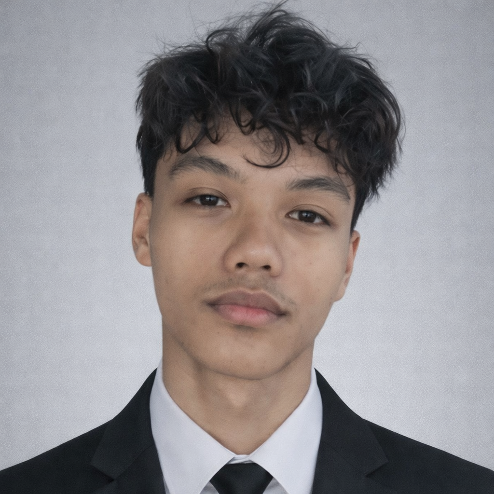

STORIES,
BROUGHT TO LIGHT.
Filmmaker. Writer. Video editor.
I turn imagination into stories
you can see, hear, and feel.

++DCB / FRAME 001Always finding
a little light
in every story.
FROM A SPARK.
TO THE SCREEN.
A collection of films, edits, and written worlds.
Different formats. The same love for storytelling.
A LITTLE LIGHT.
A LASTING
enCOUNTer.
Recognition at the LSFF Film Festival for a story I helped bring to life as director, writer, and editor.
Best Picture
Best Director
Best Editing & Cinematography
Best Score
Best Story & Screenplay — enCOUNTer
Best Actor
DANIELLE
C. BARCELA↗
You can call me sanplawir / snflwr.19 years old
Third-year college student
LPU–Cavite
I see stories everywhere.
Making them real is my favorite part.
I’m a film enthusiast, writer, and creative based in Cavite, Philippines. I write screenplays and make films, exploring distinctive ways to turn my imagination into stories that connect with people.
I also write poetry and songs, sharing work that I hope others can see themselves in. Beyond the page and the screen, I’m passionate about dance and creating choreography.
TO THE TABLE
01Video editing
Shaping footage into a cohesive story through pacing, visual rhythm, and the relationship between image and sound. My work spans short films, teasers, music videos, and a dubbing project.
02Writing
Film screenplays, concept writing, poetry, songwriting, and essays. From fully written novels to scripts brought to the screen, I build worlds through words.
03Film directing
Translating a written vision into performances, images, and atmosphere. I have directed two indie short films, a voice-dubbed cartoon, and a music video.
04Prompt engineering
Writing and refining prompts to communicate creative ideas clearly and explore possibilities during the creative process.
ALWAYS
IN THE MAKING.
On the set. On the page.
Learning through every project.
Directed two indie short films, a voice-dubbed cartoon, and a music video. Written work brought to production also includes an audiovisual script for voice dubbing, a music-video screenplay, and a short-film story.
Kameranino Film
Extra / Actor
Salya Production
Extra / Grip / Gaffer
Stories published on Wattpad.
Poetry and songwriting.
Dance and choreography.
GOT A STORY?
LET’S GIVE
IT LIGHT.
Looking for a filmmaker, writer,
or video editor for your next project?
I’d love to hear what you have in mind.